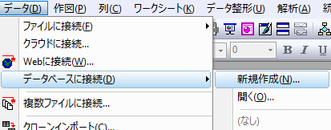
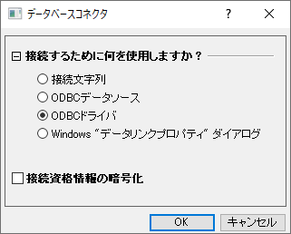
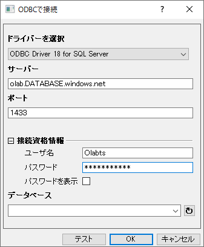
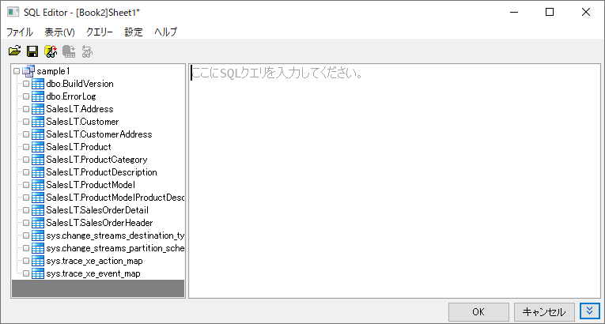
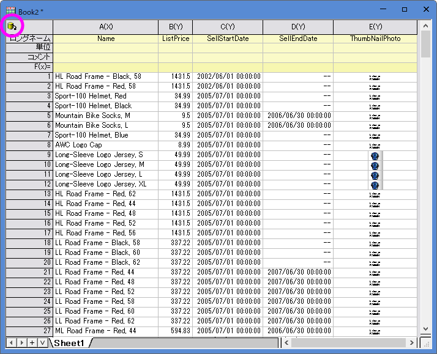
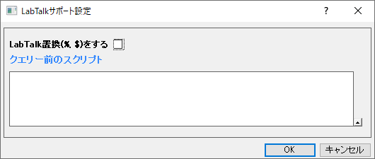
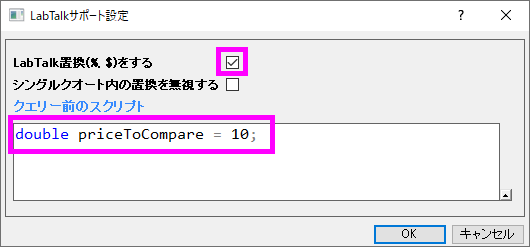
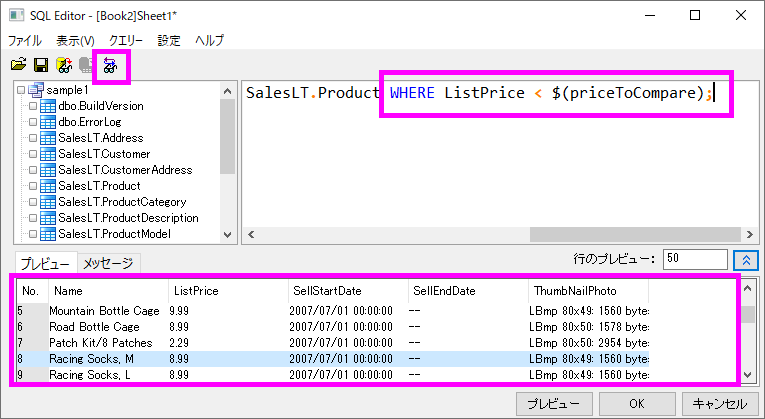

データベースからデータをインポートする
ImpData-from-DB
概要
 |
このチュートリアルで使用するデータベースはMicrosoft Azure上に設定されています。 |
このチュートリアルでは、OriginのSQLエディタを使用してSQLサーバへの接続を構築し、指定したテーブルから必要なデータを抽出する方法、SQLスクリプトでLabTalk変数を定義し簡単に変更できるようにする方法、および今後の使用のために接続または接続とクエリを保存する方法について説明します。
手順はOrigin 2023bに基づいています。
学習する項目
このチュートリアルでは、以下の項目について解説します。
- データベースからデータをインポート
- データの再インポート
- SQLエディタでのLabTalkサポート
手順
SQLエディタを使ってデータをインポート
- 新しいワークシートを用意します。メニューからデータ：データベースに接続：新規作成...を選択します。データベースコネクタダイアログボックスで、ODBCドライバを選択してOKをクリックします。


- サンプルデータベースへの接続を作成します。ログインユーザー名とパスワードを含むサーバー情報を、次の設定で指定します。
Server Driver=ODBC Driver 18 FOR SQL Server;
Server=olab.DATABASE.windows.net;
Port=1433;
USER Name=Olabts;
Password=Origin@2024;

テストボタンをクリックして、接続が成功したことを確認します。
|
データベースへの接続に失敗した場合は、このページに移動して最新のODBC
SQLドライバをダウンロードしてインストールします。 |
- データベース欄の右側にあるボタンをクリックし、データベースsample1が表示されていることを確認します。
OKボタンをクリックして、SQLエディタダイアログを開きます。
- データベース内のすべてのテーブルが左側のパネルに一覧表示されます。

メニューからファイル：接続文字列を表示を選択すると、接続文字列が下のメッセージパネルに表示されます。または、手順2でこの接続文字列を使用して接続を作成することもできます。
Driver={ODBC Driver 18 FOR SQL Server};Server=olab.DATABASE.windows.net;Port=1433;DATABASE=sample1;Uid=olabts;Pwd=Origin@2024;
- ファイル：接続を新規に保存を選択して、データソースファイルをMyDataSource.odsとして保存します。
- ここでProductテーブルからデータを抽出し、productリストを構築します。SQLスクリプトを最初から書くことができます。左パネルのノードをダブルクリックすると、エディタにテーブルとフィールド名を追加できます。下記のビデオに従ってクエリを作成するか、右パネルに次のSQLスクリプトをコピーします。
SELECT Name ,ListPrice ,SellStartDate ,SellEndDate ,ThumbNailPhoto FROM SalesLT.Product

- 結果データをプレビューボタン
 をクリックしてデータをプレビューします。メニューからファイル：接続とクエリ―を新規に保存...を選択して接続とクエリをMyQuery.odqとして保存します。将来的に、メニューのデータ：データベースに接続：MyQuery.odqから接続設定とクエリスクリプトを読み込むことができるようになります。
をクリックしてデータをプレビューします。メニューからファイル：接続とクエリ―を新規に保存...を選択して接続とクエリをMyQuery.odqとして保存します。将来的に、メニューのデータ：データベースに接続：MyQuery.odqから接続設定とクエリスクリプトを読み込むことができるようになります。
.
- OKボタンをクリックするとデータがインポートされます。インポートされると、ワークシートはデータベースに接続され、ワークシートの左上に黄色のアイコンが表示されます。

データベースからの再インポート
データがインポートされると、接続とクエリはデータコネクタに自動的に保存されます。データベースコネクタ をクリックし、インポートを選択して、データベースからデータを再度インポートできます。以下の手順をお試しください。
をクリックし、インポートを選択して、データベースからデータを再度インポートできます。以下の手順をお試しください。
- をクリックし、インポートしたデータのロック解除を選択します。
- ワークシート内の一部のデータを削除または変更します。
- をクリックし、インポートを選択します。データが元通りになります。
- クエリを変更するには、ワークシートがアクティブな状態でをクリックしてSQLエディタを選択します。
- 同じデータベースに対して新しいデータベースクエリを設定するには、次のいずれかの操作を行います。
- ワークブックを複製します（メニューのウィンドウ：複製作成）。新しいワークブックで、をクリックしてSQLエディタを選択し、クエリを編集します。
- 新しいワークブックを用意します。メニューからデータ：データベースに接続を選択します。 保存されているすべてのファイル、ODSファイル、ODQファイルがここに表示されます。
- MyQuery.ODQを選択します。データベースエディタダイアログが開き、保存されたSQLクエリが表示されます。OKボタンをクリックするとインポートが実行されます。
 |
デフォルトでは、インポートされたデータはプロジェクト（OPJUファイル）に保存されません。大きなデータベースによってOPJUファイルのサイズが大きくなるのを防ぐためです。プロジェクト内にデータを保存する場合は、をクリックして、保存時にインポートデータを除外のチェックを外します。
その後プロジェクトを保存します。 |
SQLエディタ内でのLabTalkサポート
SQLクエリを変更して、単価が10ドル未満の製品のみを取得してみましょう。このセクションでは、条件に価格のLabTalk数値変数を定義して、将来クエリを変更しやすくする方法を示します。
- をクリックしてSQLエディタを選択します。
- LabTalk数値変数を追加するには、クエリー：LabTalk...を選択してLabTalkサポート設定ダイアログを開きます。

- LabTalk置換 (%,$) をするチェックボックスをオンにします。
- LabTalk数値変数priceToCompareを定義するための以下のスクリプトを入力します。
double priceToCompare = 10;
これをクエリー前のスクリプト に入力します。OKをクリックします。

- 右側のパネルのSQLスクリプトの最後に、下記を追加します。
WHERE ListPrice < $(priceToCompare)
 ボタンをクリックして、SQLエディタボックスでLabTalk変数が置換されたSQLクエリ文字列をプレビューします。
ボタンをクリックして、SQLエディタボックスでLabTalk変数が置換されたSQLクエリ文字列をプレビューします。

- OKをクリックするとこれらのデータがインポートされます。
- 今後は、LabTalkサポート設定ダイアログでpriceToCompareの値を変更するだけでよくなります。SQLクエリを変更する必要はありません。